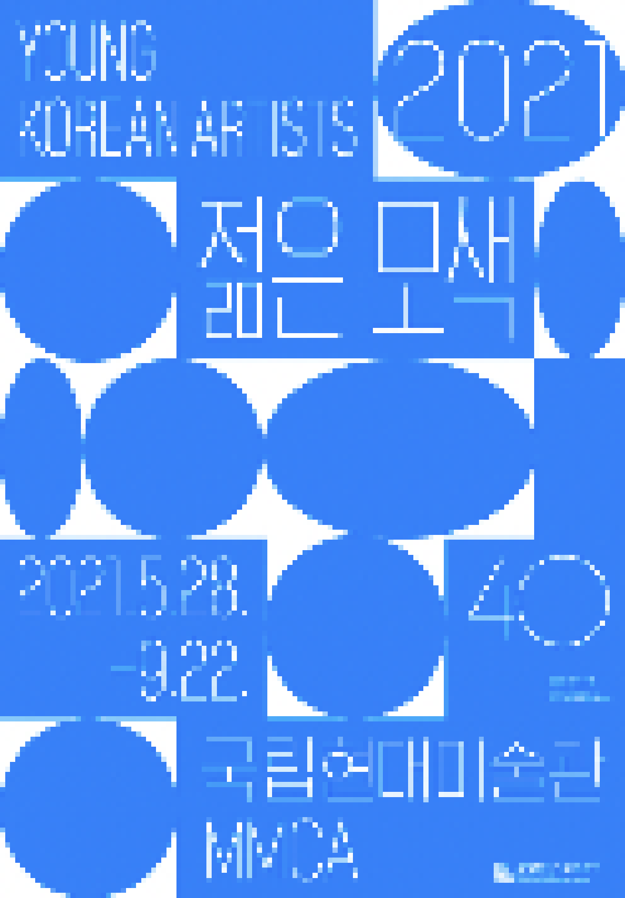

> title
젊은모색 2021
> content
《젊은 모색 2021》은 올해로 40주년을 맞이한 국립현대미술관의《젊은 모색》 20회차 전시이다. 《젊은 모색》전은 1981년 《청년작가전》으로 출발, 국내에서 가장 오래되고 권위 있는 신진
작가 발굴 프로그램이다.
동시대 미술의 최전선에 있는 신진 작가들을 소개하고, 이를 계기로 한국 미술의 미래를 가늠해보는 역할을 지속해왔다. 올해까지 20회차에 걸쳐 약 400여 명의 신진 작가들이 《젊은 모색》전을
통해 소개되었고 이
프로그램을 통해 이름을 알리고 한국을 대표하는 작가로 성장했다.
올해 전시는 지난 40년간 동시대 신진 작가들을 폭넓게 발굴하고자 노력했던 《젊은 모색》전의 정신을 이어가면서도 해외를 포함한 지역별, 매체별 다양성에 집중하여 선정 대상을 확대했다.
선정된 15명의 작가들은 회화,
조각, 설치, 미디어, 퍼포먼스, 사진, 영화, 도예 등 다양한 매체를 활용하는 30대 작가들로, 각자가 다루는 매체의 속성을 탐구하는 것에서 더 나아가 개인과 사회, 미술과 사회의 접점에도
관심을 드러내며 이를
탐색하는 작업을 보여준다. 이들의 사회적 시선은 각자가 처한 상황과 특수성에 따라 상이한 모습으로 나타난다. 이번 전시 출품작들은 팬데믹과 같은 특수한 상황을 공통적으로 경험하는 동시대 청년
세대로서의 접점을
다양하면서도 이질적으로 드러낸다. 이번 전시에는 총 140여 점의 신작을 포함하여 총 160여 점이 공개된다.
